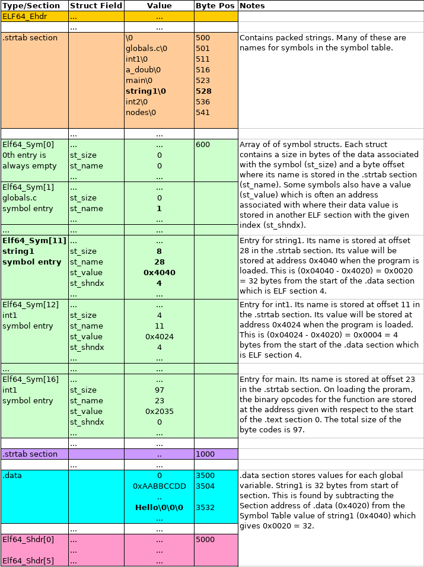

CSCI 2021 Project 5: ELF File Symbol Modification
- Due: 11:59pm Mon 12/15/2021
- Approximately 3.0-4.0% of total grade
- Submit to Gradescope
- Projects are individual work: no collaboration with other students is allowed. Seek help from course staff if you get stuck for too long.
CODE DISTRIBUTION: p5-code.zip
CHANGELOG:
- Tue Dec 14 11:17:47 AM CST 2021
Minor typo corrections / diagram updates were made to the spec. Submission is now open on Gradescope.
A small bug in the
Makefilemight lead to some spurious errors being reported during automated testing. If you get messages likevalgrind: globals permission deniedthen make the following modification to yourMakefile(or download the codepack which has the update).# TESTING TARGETS test: test-prob1 test-setup : @chmod u+rx testy @chmod u+rx -R test-input # ADD THIS LINE test-prob1: patchsym test-setup ...
- Thu Dec 9 03:57:25 PM CST 2021
As reported in Post 411 the template program was inadvertently named
patchsymc.cin the original codepack rather than justpatchsym.c. Rename the file or re-download the codepack as this has been corrected.The
PTR_PLUS_BYTES()macro from lab 14 has also been copied into the template and its use is strongly encouraged as it will help avoid pointer arithmetic problems.
Table of Contents
- 1. Overview
- 2. Download Code and Setup
- 3. Problem 1: Changing ELF Symbol Values
- 3.1. ELF File References
- 3.2. Overall Approach
- 3.3. ELF Header and Section Header Array
- 3.4. String Tables, Names, Section Headers
- 3.5. The
.dataSection and its Address - 3.6. Symbol Table and
.strtab - 3.7. Altering a String Value
- 3.8. Example Invocations
- 3.9. Behavior in Error Cases
- 3.10.
patchsymTemplate - 3.11. Automated Tests for Problem 1
- 3.12. Grading Criteria for
patchsym
- 4. Project Submission
1 Overview
This project features a single required problem pertaining to the final topics discussed in lecture.
patchsym uses mmap() to parse a binary ELF file to make changes to
a global symbol. Tools that work with object files like the linker
associated with the GCC and the program loader must perform similar
though more involved tasks involving ELF files. mmap() is very
useful for handling binary files and is demonstrated in Lab 14.
2 Download Code and Setup
Download the code pack linked at the top of the page. Unzip this which will create a project folder. Create new files in this folder. Ultimately you will re-zip this folder to submit it.
| File | State | Notes |
|---|---|---|
Makefile |
Provided | Build file to compile all programs |
testy |
Testing | Test running script |
test-input/* |
Testing | Problem 1 and 2: Directory with required data files |
patchsym.c |
COMPLETE | Problem 2 template to complete |
test-input/globals |
Data | Problem 2 ELF object file for input to patchsym |
| Several other ELF and non-ELF files provided |
3 Problem 1: Changing ELF Symbol Values
The Executable and Linkable (ELF) File Format is the Unix standard for
binary files with runnable code in them. By default, any executable
or .o file produced by Unix compilers such as GCC produce ELF
files as evidenced by the file command.
>> gcc -c code.c >> file code.o code.o: ELF 64-bit LSB relocatable, x86-64, version 1 (SYSV), not stripped >> gcc program.c >> file a.out a.out: ELF 64-bit LSB shared object, x86-64, version 1 (SYSV), dynamically linked, interpreter /lib64/ld-linux-x86-64.so.2, for GNU/Linux 3.2.0
This problem explores the file format of ELF in order to manipulate
string symbols present in the file. ELF Symbols are associated with
either Global Variables or Functions in a program. These are stored
in the .symtab ELF section short for "Symbol Table". The standard
utility readelf shows human readable versions of ELF files and the
-s option specifically prints out the symbol table section. Below is
a session which shows the source code for provided program globals
then uses readelf to show the symbol table associated with its
compiled version.
a5-code>> cd test-input/
test-input>> file globals*
globals: ELF 64-bit LSB pie executable, x86-64, version 1 (SYSV), dynamically linked, interpreter /lib64/ld-linux-x86-64.so.2, BuildID[sha1]=d01cc7cd0b9cb5cfac4d27b179d4e467d5e83014, for GNU/Linux 3.2.0, not stripped
globals.c: C source, ASCII text
test-input>> cat globals.c
// globals.c: simple program which has several global variables in
// it. Used for testing programs which manipulate ELF symbol tables.
#include <stdio.h>
char string1[8] = "Hello";
char string2[64] = "Goodbye cruel world";
char string3[16] = "All your bass";
int int1 = 0xAABBCCDD;
int int2 = 0xFFEEDDCC;
double a_doub = 1.234567;
int main(int argc, char *argv[]){
printf("string1: %s\n",string1);
printf("string2: %s\n",string2);
printf("string3: %s\n",string3);
printf("int1: %x\n",int1);
printf("int2: %x\n",int2);
printf("a_doub: %f\n",a_doub);
return 0;
}
test-input>> readelf -s globals
...
Symbol table '.symtab' contains 70 entries:
Num: Value Size Type Bind Vis Ndx Name
...
46: 00000000000040b4 4 OBJECT GLOBAL DEFAULT 23 int2
...
52: 00000000000040a0 16 OBJECT GLOBAL DEFAULT 23 string3
53: 0000000000004040 8 OBJECT GLOBAL DEFAULT 23 string1
...
59: 00000000000040b8 8 OBJECT GLOBAL DEFAULT 23 a_doub
...
61: 00000000000040b0 4 OBJECT GLOBAL DEFAULT 23 int1
65: 0000000000001139 173 FUNC GLOBAL DEFAULT 13 main
66: 0000000000004060 64 OBJECT GLOBAL DEFAULT 23 string2
...
A number of entries in the symbol table are omitted for clarity: only those associated with data in the program are shown.
Note the following about the symbol table.
- Global Variables are identified with Type
OBJECTSizecorresponds to how many bytes the global variable occupies.- String arrays have
Sizeequal to their length,intglobals haveSize=4anddoubleglobals haveSize=8 Ndxis the ELF file section in which the global variable's value is stored. In this case, all global variables are in Section 23 which is likely the.datasection where initialized global data is stored.Valueis the (approximate) virtual address of the global variable when a program is loaded into the memory; it relates to the (approximate) virtual address of where the ELF.datasection gets loaded when a program starts running
- Functions are identified with Type
FUNCand have the following attributes:Sizecorresponds to how many bytes the function's binary Opcodes occupyNdxis the ELF file section in which the function exists; in this case it is Section 13 which is likely the.textsectionValueis the starting address of the function
The goal of the problem is to construct a program called patchsym
which allows one to change the data associated with an ELF file string
symbol to a new value. This allows an Executable or Compiled Object
File to be altered and see that alteration in subsequent runs of a
program without needing to recompile. And example is below in which
a5-code>> make patchsym # build patchsym gcc -Wall -g -Og -o patchsym patchsym.c a5-code>> cp test-input/globals ./globals2 # make a copy of program to change a5-code>> ./globals2 # run the program to show its outpu string1: Hello # string1 is "Hello" string2: Goodbye cruel world string3: All your bass int1: aabbccdd int2: ffeeddcc a_doub: 1.234567 a5-code>> patchsym globals2 string1 string 'Ciao' # change string1 to 'Ciao' in executable SET mode # SET mode to change symbol .data section # info on the .data section where 'Hello' is stored - 23 section index # index of .data section in section header table - 12320 bytes offset from start of file - 0x4020 preferred virtual address for .data .symtab section # info on the Symbol Table where symbols are located - 26 section index - 12504 bytes offset from start of file - 1680 bytes total size - 24 bytes per entry - 70 entries Found Symbol 'string1' # info on symbol string1 - 53 symbol index - 0x4040 value - 8 size - 23 section index # index of the .data section where value is stored - 32 offset in .data of value for symbol string value: 'Hello' # old value for symbol New val is: 'Ciao' # new value for string a5-code>> ./globals2 # run executable, no re-compile string1: Ciao # string1 changed to 'Ciao' string2: Goodbye cruel world string3: All your bass int1: aabbccdd int2: ffeeddcc a_doub: 1.234567
Importantly, the executable initially printed Hello but after
changes mad by patchsym it prints Ciao. This is accomplished by
locating the symbol string1 in the executable and modifying
associated ELF file data to alter its value.
3.1 ELF File References
It is recommended to do some reading on the structure of the ELF format as it will assist in coming to grips with this problem. As you encounter parts of the below walk-through of how to find and print the symbol table, refer to the following resources.
- Diagrams shown below provide some information about the basics of what is provided in each portion of the file and how some of the records relate to each other.
- Manual Pages: The manual page on ELF (found online or by typing
man elfin any terminal) gives excellent coverage of the structs and values in the file format. Essentially the entire format is covered here though there may be a few ambiguities. - Wikipedia: A good overview of the file format and has some extensive tables on the structs/values that comprise it.
- Oracle Docs: A somewhat more detailed and hyper-linked version of the manual pages.
Note that we will use the 64-bit ELF format only which means most of
the C types for variables should mention ELF64_xxx in them though
use of 32-bit integers may still apply via uint32_t.
3.2 Overall Approach
ELF files are divided into sections. Our main interest is to identify
the .symtab (Symbol Table) and .data (Initialized Data)
sections. This is done in several steps.
- Parse the File Header to identify the positions of the Section Header Array and Section Header String Table
- Search the Section Header Array and associated string table to find
the sections named
.symtabwhich is the symbol table,.strtabwhich contains the string names of the symbol table, and.datawhich contains the values for global variables. Note the position in the file of these three sections. - Iterate through the Symbol Table section which is an array of
structs. Use the fields present there along with the associated
string names in
.strtabto check each symbol for the symbol of interest. - Once the symbol is found in
.symtab, its value from.symtabis used to compute the offset within the.datasection. This is where the symbols string data is stored and it can be changed.
Since this is a binary file with a considerable amount of jumping and
casting to structs, it makes sense to use mmap() to map the entire
file into virtual memory. It is a requirement to use mmap() for this
problem. Refer to lecture notes, textbook, and lab materials for
details on how to set up a memory map and clean it up once
finished. In particular Lab 13 uses mmap() to parse binary files in
a way that is directly relevant to the present program.
One change over the Lab is that patchsym changes the data in a file
so mmap() must be invoked with the correct options for both Reading
and Writing. Find the correct options for these permissions in the
manual page for mmap().
3.3 ELF Header and Section Header Array
The initial bytes in an ELF file always have a fixed structure which
is the ELF64_Ehdr type. Of primary interest are the following
- Identification bytes and types in the field
e_ident[]. These initial bytes identify the file as ELF format or not. If they match the expected values, proceed. If incorrect, consult the later section on Error Conditions on what error message to print. - The Section Header Array byte position in the field
e_shoff. The Section Header Array is like a table of contents for a book giving positions of most other sections in the file. It usually occurs near the end of the file. - The index of the Section Header String Table in field
e_shstrndx. This integer gives an index into the Section Header Array where a string table can be found containing the names of headers.
The following diagram shows the layout of these first few important parts of an ELF file.
Figure 1: ELF File Header with Section Header Array and Section Header String Table.
3.4 String Tables, Names, Section Headers
To keep the sizes of structures fixed while still allowing variable length names for things, all the names that are stored in ELF files are in string tables. You can see one of these laid in the middle purple section of the diagram above starting at byte offset 1000. It is simply a sequence of multiple null-terminated strings laid out adjacent to one another in the file.
When a name is required, a field will give an offset into a specific
string table. For example, each entry of the Section Header Array has
an sh_name field which is an offset into the .shstrtab (the sh
is for "section header").. The offset indicates how far from the start
of the string table to find the require name.
- The
.shstrtabsection begins at byte 1000 so all name positions are1000 + sh_name - The 0th
.textsection hassh_name = 0; the string.text\0appears at position 1000. - The 1th
.symtabsection hassh_name = 6; the string.symtab\0appears at byte position 1006. - The 4th
.datasection hassh_name = 32; the string.bss\0appears at byte position 1032.
The Section Header Array is an array of Elf64_Shdr structs. By
iterating over this array, fishing out the names from .shstrtab, and
examining names using strcmp(), the positions for the two desired
sections, .symtab and .strtab can be obtained via the associated
sh_offset field.
Note that one will need to also determine length of the Section Header
Array from the ELF File Header field e_shnum.
Also, on finding the Symbol Table section, note its size in bytes
from the sh_size field. This will allow you to determine the number
of symbol table entries.
3.5 The .data Section and its Address
In addition to identifying the .symtab and .strtab sections in the
section header, identify and track the location of the .data section
as this is where the values associated with initialized global variables in C
programs are stored. The .data section is copied directly into
memory when a program is loaded. The section header struct field
sh_addr is the requested location for some sections to be
loaded. Record it in your program as this address is used to calculate
the location of variable values from the symbol table.
Once the location of the .data section is located, print out some
data about it in the following format.
.data section - 23 section index - 12320 bytes offset from start of file - 0x4020 preferred virtual address for .data
3.6 Symbol Table and .strtab
Similar to the Section Header Array, the Symbol Table is comprised of
an array of Elf64_Sym structs. Each of these structs has a
st_name field giving an offset into the .symtab section where a
symbol's name resides. The following diagram shows this relationship.

Figure 2: ELF Symbol Table, associated String Table, and locations of symbol values in .data section. The entry location of symbol string1 is bolded along with the location of its name "string1" and location of its value "Hello"
Print out data on the symbol table in the format given below. Note that this data does not correspond to the diagram which is much simpler.
.symtab section - 26 section index - 12504 bytes offset from start of file - 1680 bytes total size - 24 bytes per entry - 70 entries
patchsym will change one of the values of the symbols in symbol
table. To that end, one must iterate through the array of Symbol Table
Elf64_Sym structs searching for the name of the symbol to be
changed. In the above diagram, string1 is of interest and is found
midway through the table at index 11. On finding the requested
symbol, print out data about it in the following format.
Found Symbol 'string1' - 53 symbol index - 0x4040 value - 8 size - 23 section index - 32 offset in .data of value for symbol string value: 'Hello'
- The
st_sizein this case corresponds to the length of thechararray allocated for the string in global memory - The "value" in the
st_valuefield is actually the address at which the symbol's data is stored. This is with respect to the.datasection - The section index
st_shndxfield gives the ELF section in which this symbol is stored. In this case, it is section 23 which is the index of the.datasection where initialized global variables are stored. - The location of
string1's value in the.datasection is computed by calculating its address as an offset from the address of the.datasection:.datawill load at0x4020string1is at address0x4040- The value of
string1is therefore offset0x4040 - 0x4020 = 0x0020 = 32from the start of the.datasection
- Add 32 to the offset of
.datafrom the beginning of the file (found in earlier when locating the.datasection) to get the address of the string. - Printing this address as a string should give string value
Hello
If the symbol that is requested is not found in the symbol table, refer to the Error Conditions section for the appropriate error message to print.
3.7 Altering a String Value
patchsym works in either GET_MODE or SET_MODE
GET_MODEstops after printing out above information on the.data,.symtab, and a specific symbol with its current value. It is invoked by running with 3 command line arguments:> patchsym globals string1 string # GET_MODE, show value of string1
SET_MODEwill print all the above information and then change the symbol to a new value. It is run by passing a 4th command line argument which is the new string.> patchsym globals string1 string 'Ciao' # SET_MODE, change string1 to Ciao
When in SET_MODE, the last step is to use the address of a symbol
in the .data section to change the value there. When using
mmap(), the memory-mapped ELF file will automatically save any
changes made to the bytes that are mapped. Therefore writing new data
to a char * pointing into the memory map will alter the file. One
can copy in the new string using several techniques.
- A manual
for()loop iterating over the characters of the new string and copying them into the location of the symbol - Via a library function like
strcpy()
Importantly, before changing the value of a string symbol, check that the new string's length is equal to or shorter than the old string.
string1has ast_sizeof 8 meaning it can hold up to 7 characters plus a\0null terminator character- Copying
Ciaois fine as this is 4+1=5 total characters - Copying
Farewell8+1=9 chars which is too long: it will overwrite bytes associated with another variable in.datawhich is bad
On success, print the new value of the string symbol as in
string value: 'Hello' # old value for symbol New val is: 'Ciao' # new value for string
If a request is made to change a string to new value which is too long, print an error message as indicated in the Error Conditions section.
3.8 Example Invocations
The following are some example invocations of patchsym from the
provided tests.
> test-input/globals # show output of running globals program string1: Hello string2: Goodbye cruel world string3: All your bass int1: aabbccdd int2: ffeeddcc a_doub: 1.234567 > ./patchsym test-input/globals string1 string # get the value of the string1 symbol GET mode .data section - 23 section index - 12320 bytes offset from start of file - 0x4020 preferred virtual address for .data .symtab section - 26 section index - 12504 bytes offset from start of file - 1680 bytes total size - 24 bytes per entry - 70 entries Found Symbol 'string1' - 53 symbol index - 0x4040 value - 8 size - 23 section index - 32 offset in .data of value for symbol string value: 'Hello' > cp test-input/globals test-input/globals2 # make a copy to preserver the original for testing > ./patchsym test-input/globals2 string1 string 'ADIOS!' # change string 1 to adios SET mode .data section - 23 section index - 12320 bytes offset from start of file - 0x4020 preferred virtual address for .data .symtab section - 26 section index - 12504 bytes offset from start of file - 1680 bytes total size - 24 bytes per entry - 70 entries Found Symbol 'string1' - 53 symbol index - 0x4040 value - 8 size - 23 section index - 32 offset in .data of value for symbol string value: 'Hello' New val is: 'ADIOS!' > test-input/globals2 # run the executable string1: ADIOS! # string1 has changed string2: Goodbye cruel world string3: All your bass int1: aabbccdd int2: ffeeddcc a_doub: 1.234567
3.9 Behavior in Error Cases
The following errors can occur during execution of patchsym and
should result in the given error messages being printed.
Wrong Magic Bytes
patchsym should check these "magic bytes" (first elements of
e_ident[] in header). If they match the expected values, proceed but
if they are incorrect, print the following example message
> ./patchsym test-input/globals.c string1 string GET mode ERROR: Magic bytes wrong, this is not an ELF file
Missing Symbol Tables
During the search for the symbol table, it is possible that it is not
found. Such objects are usually executables that have been "stripped"
of a symbol table. After iterating through all sections in the Section
Header array and finding that no entry has the .symtab name print
the message in the example below.
> ./patchsym test-input/naked_globals string1 string GET mode ERROR: Couldn't find symbol table
Symbol Not Found
Any name that is not found in the symbol table should result in the following final error message.
> ./patchsym test-input/globals nada string GET mode .data section - 23 section index - 12320 bytes offset from start of file - 0x4020 preferred virtual address for .data .symtab section - 26 section index - 12504 bytes offset from start of file - 1680 bytes total size - 24 bytes per entry - 70 entries ERROR: Symbol 'nada' not found
Symbol Not in .data Section
Some symbols are not in the .data section; for example FUNCTION
symbols like main are in the .text section so cannot be changed as
global data. In these cases, print out the section they are in as per
the error message format below.
> ./patchsym test-input/globals main string GET mode .data section - 23 section index - 12320 bytes offset from start of file - 0x4020 preferred virtual address for .data .symtab section - 26 section index - 12504 bytes offset from start of file - 1680 bytes total size - 24 bytes per entry - 70 entries Found Symbol 'main' - 65 symbol index - 0x1139 value - 173 size - 13 section index ERROR: 'main' in section 13, not in .data section 23
New String Too Long
If the space allocated for a string is too short for a new value, it
is dangerous to alter the .data section as nearby values may be
clobbered. Instead, do not change anything and print the following
error message.
> ./patchsym test-input/globals2 string1 string 'Adios, muchachos. Lo siento.' SET mode .data section - 23 section index - 12320 bytes offset from start of file - 0x4020 preferred virtual address for .data .symtab section - 26 section index - 12504 bytes offset from start of file - 1680 bytes total size - 24 bytes per entry - 70 entries Found Symbol 'string1' - 53 symbol index - 0x4040 value - 8 size - 23 section index - 32 offset in .data of value for symbol string value: 'Hello' ERROR: Cannot change symbol 'string1': existing size too small Cur Size: 8 'Hello' New Size: 29 'Adios, muchachos. Lo siento.'
Non-string Symbol Types
When patchsym is run, the type of the Symbol to be changed is
provided. The required implementation of patchsym honors only string
variables as in
> ./patchsym test-input/list_main2 PROMPT string
Check this type before printing or changing a symbols value and if it cannot be handled, print the following error message.
> ./patchsym test-input/globals string2 unknown GET mode .data section - 23 section index - 12320 bytes offset from start of file - 0x4020 preferred virtual address for .data .symtab section - 26 section index - 12504 bytes offset from start of file - 1680 bytes total size - 24 bytes per entry - 70 entries Found Symbol 'string2' - 66 symbol index - 0x4060 value - 64 size - 23 section index - 64 offset in .data of value for symbol ERROR: Unsupported data kind 'unknown'
Note that this leaves open the possibility to support other data kinds
such as int and double. It is not required but is good practice
to implement support for these so that one could run invocations like.
> ./patchsym test-input/globals a_doub double 4.56 ... > ./patchsym test-input/globals int1 int 123 ...
Such additions would make good exam problems to test one's understanding of the program.
3.10 patchsym Template
A basic template for patchsym.c is provided in the code pack which
outlines the structure of the code along with some printing formats to
make the output match examples. Follow this outline closely to make
sure that your code complies with tests when the become available.
3.11 Automated Tests for Problem 1
As in previous projects, automated tests are provided and can be run via
>> make test-prob1 # run all tests ... >> make test-prob1 testnum=4 # run a single test
Correct execution looks like the following:
>> make test-prob1 ./testy test_patchsym.org ============================================================ == test_patchsym.org : patchsym tests == Running 10 / 10 tests 1) get globals string1 : ok 2) get globals string2 : ok 3) get globals notthere : ok 4) set globals string1 : ok 5) set globals string3 : ok 6) set globals string1-3 : ok 7) set quote_main2 correct : ok 8) set greet_funcs.o greeting : ok 9) Basic Error Conditions : ok 10) String Too Long : ok ============================================================ RESULTS: 10 / 10 tests passed
3.12 Grading Criteria for patchsym grading
Both binary and shell tests can be run with make test-p2
| Weight | Criteria |
|---|---|
| Automated Tests | |
| 10 | Passing automated tests in test_patchsym.org via make test-prob1 |
| Manual Inspection | |
| 5 | Correctly sets up a memory map using open(), fstat(), mmap() |
| Creates a memory map of the requested file in read + write mode | |
| Correct unmap and close of file description at end of execution | |
| 10 | Sets a pointer to the ELF File Header properly |
Checks identifying bytes for sequence {0x7f,'E','L','F'} |
|
| Properly extracts the Section Header Array offset, length, string table index | |
| 10 | Sets up pointers to Section Header Array and associate Section Header String Table |
Loops over Section Header Array for sections named .symtab / .strtab / .data |
|
| Properly uses SH String Table to look at names of each section while searching | |
Extracts offsets and sizes of .symtab / .strtab / .data sections, location of the address for .data |
|
| 10 | Iterates over the symbol table to locate the named symbol |
| Clear cases for finding the requested symbol or failure to find symbol in the table | |
Calculation done to find the position of a symbol value in the .data section |
|
In SET_MODE, changes symbol to the new string if it is appropriately sized |
|
| 5 | Clean, readable code |
| Good indentation | |
| Good selection of variable names | |
| 50 | Problem Total |
4 Project Submission
4.1 Submit to Gradescope
In a terminal, change to your project code directory and type make zip which will create a zip file of your code. A session should look like this:
> cd Desktop/2021/p5-code # location of project code > ls Makefile el_malloc.c test-input/ ... > make zip # create a zip file using Makefile target rm -f p5-code.zip cd .. && zip "p5-code/p5-code.zip" -r "p5-code" adding: p5-code/ (stored 0%) adding: p5-code/el_malloc.c (deflated 72%) adding: p5-code/Makefile (deflated 59%) ... Zip created in p5-code.zip > ls p5-code.zip p5-code.zip- Log into Gradescope and locate and click Project 5' which will open up submission
- Click on the 'Drag and Drop' text which will open a file selection
dialog; locate and choose your
p5-code.zipfile - This will show the contents of the Zip file and should include your C source files along with testing files and directories.
- Click 'Upload' which will show progress uploading files. It may take a few seconds before this dialog closes to indicate that the upload is successful. Note: there is a limit of 256 files per upload; normal submissions are not likely to have problems with this but you may want to make sure that nothing has gone wrong such as infinite loops creating many files or incredibly large files.
- Once files have successfully uploaded, the Autograder will begin
running the command line tests and recording results. These are
the same tests that are run via
make test. - When the tests have completed, results will be displayed summarizing scores along with output for each batch of tests.
- Refer to the Submission instructions for P1 for details and pictures.
4.2 Late Policies
You may wish to review the policy on late project submission which will cost you late tokens to submit late or credit if you run out of tokens. No projects will be accepted more than 48 hours after the deadline.